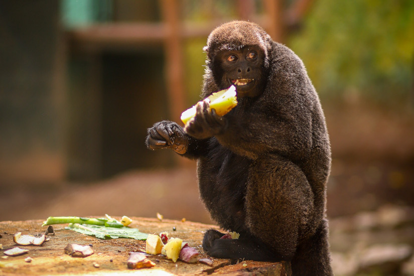
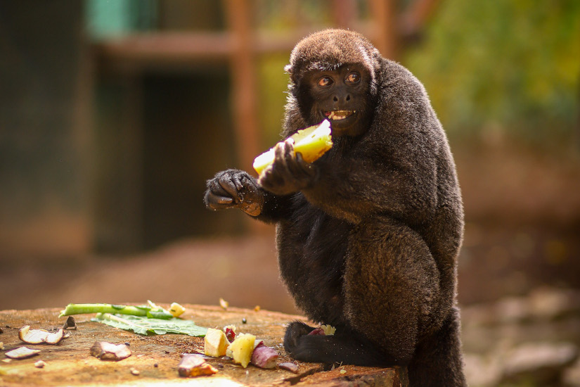

O Que Faz Zoológico Municipal de Guarulhos
O Zoológico Municipal de Guarulhos, criado em 1981, mantém cerca de 400 animais de 100 diferentes espécies, priorizando a fauna nacional com 91% das espécies do plantel sendo nativas.
O ZooGuarulhos participa de programas de conservação de espécies ameaçadas, bem-estar animal, realiza pesquisas científicas e atividades de educação para conservação da biodiversidade. Os animais recebem cuidados constantes, tanto preventivos como curativos, por uma equipe de biólogos, veterinários e tratadores, incumbidos na manutenção de sua saúde e bem estar.
Saiba Mais


 
